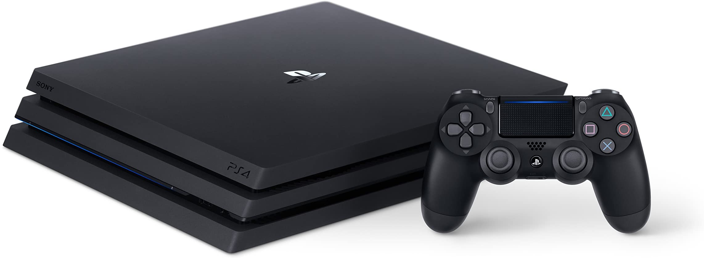
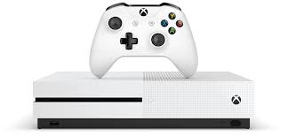

GG CONSOLAS
GG Games Su Tienda Favorita De VideoJuegos Al Mas Bajo Costo Del Mercado
Pagina Principal
PC
Consolas
VideoJuegos
Accesorios
Tienda
Trucos
Noticias
PLAY STATION 4

PlayStation 4: Ventas actualizadas y cuota de mercado
XBOX ONE

Xbox One: Ventas actualizadas y cuota de mercado
Nintendo Switch
Nintendo Switch: Ventas actualizadas y cuota de mercado